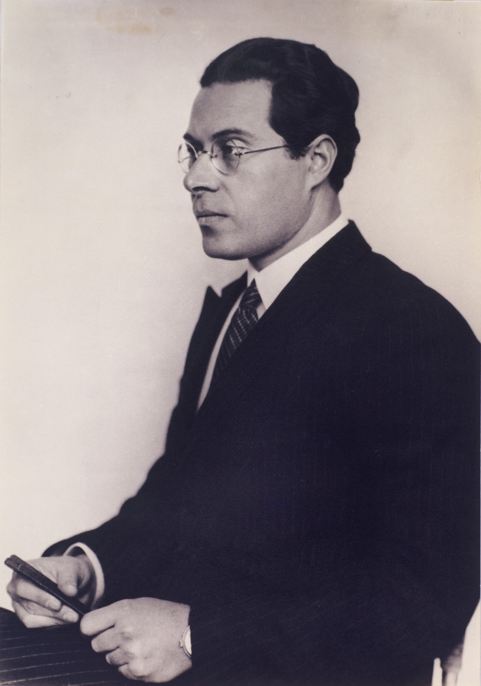

Type of visual
Photomontage (montage of photographs)

Assuh Zigarette cigarette packaging, Herbert Bayer, 1925
Typography
Universal typeface (In 1925, Walter Gropius commissioned Bayer to design a typeface to be used for all official Bauhaus communications...)

Designers

MOHOLY-NAGY LÁSZLÓ 1895-1946 (In 1923, he was invited to teach at the Bauhaus in Weimar...)
Herbert Bayer 1900-1985 (Herbert Bayer was one of the last great survivors of the Bauhaus...)
Works

Staatliches Bauhaus poster, Joost Schmidt, 1923 (Color lithograph with glued paper strip)

Cover of Bauhausbuch 6, Theo van Doesburg, 1924 (book cover)